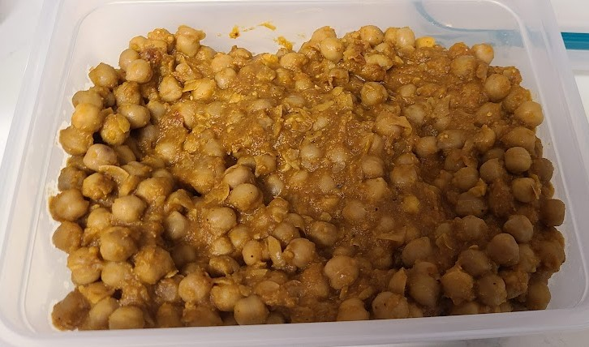

Chaana Masala

Mother's Recipe
Ingredients
- 2 cups of dry chickpeas
- 1 medium onion
- 2 medium tomatoes
- 2 Green chilies or 1 tbsp red chili powder (dependent on intensity of powder)
- 3/2 teaspoon cumin coriander powder mix
- 1 teaspoon of garam masala
- 1/4 teaspoon of turmeric powder
- 1/4 teaspoon sugar
- 1 teaspoon salt (adjust to taste)
- 1-3/2 inch of ginger
- 3 cloves of garlic
- 2 tsp oil
- 2 tsp ghee
Directions
- Wash the beans
- Soak the beans in a lot of water (3 to 4x water per beans) overnight or for at least 5 hours
- Remove all the water, rinse the beans
- Put it in a metal container
- Put that in a pressure cooker for 4-5 whistles on the highest setting
- While that is going prepare the gravy
- Cut the onions and tomatoes in big chunks
- Put 2 tsp oil and 2 tsp ghee in a deep pan
- Let the ghee melt
- Put 1/4 tsp sugar
- Let the sugar melt and brown
- When sugar browns, put the chopped onion in.Cook for a minute
- When onion becomes translucent put the ginger and garlic
- Make sure the garlic does not burn
- Then put the chili in it
- Put the cumin/coriander mix in and the garam masala and turmeric powder
- Cook for about a minute
- Then put tomatoes in it
- Cover it up to cook the tomatoes
- When tomatoes get cooked and get mushy, open the lid and keep it open and stir until you see oil coming out/li>
- When oil comes out shut the gas and let it cool down
- Grind everything (in the gravy) up
- Put it back in the pan
- Cook the gravy for half a minute
- Put the chickpeas (that were in the pressure cooker) in the pan
- Cook it while covered
- After 5 min taste it
- If everything is okay, take kasoori methi and 1 to 3/2 lemon juice crush it in you hand and put it in the pan
- Cook it while covered for half a minute